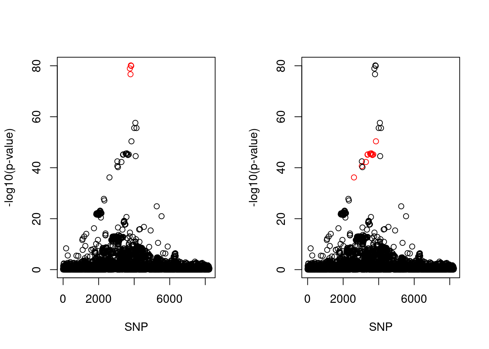

Last updated: 2024-03-24
Checks: 7 0
Knit directory:
coxPHSuSIE-data-application/
This reproducible R Markdown analysis was created with workflowr (version 1.7.0). The Checks tab describes the reproducibility checks that were applied when the results were created. The Past versions tab lists the development history.
Great! Since the R Markdown file has been committed to the Git repository, you know the exact version of the code that produced these results.
Great job! The global environment was empty. Objects defined in the global environment can affect the analysis in your R Markdown file in unknown ways. For reproduciblity it’s best to always run the code in an empty environment.
The command set.seed(20240324) was run prior to running
the code in the R Markdown file. Setting a seed ensures that any results
that rely on randomness, e.g. subsampling or permutations, are
reproducible.
Great job! Recording the operating system, R version, and package versions is critical for reproducibility.
Nice! There were no cached chunks for this analysis, so you can be confident that you successfully produced the results during this run.
Great job! Using relative paths to the files within your workflowr project makes it easier to run your code on other machines.
Great! You are using Git for version control. Tracking code development and connecting the code version to the results is critical for reproducibility.
The results in this page were generated with repository version 068b07e. See the Past versions tab to see a history of the changes made to the R Markdown and HTML files.
Note that you need to be careful to ensure that all relevant files for
the analysis have been committed to Git prior to generating the results
(you can use wflow_publish or
wflow_git_commit). workflowr only checks the R Markdown
file, but you know if there are other scripts or data files that it
depends on. Below is the status of the Git repository when the results
were generated:
Ignored files:
Ignored: .Rproj.user/
Note that any generated files, e.g. HTML, png, CSS, etc., are not included in this status report because it is ok for generated content to have uncommitted changes.
These are the previous versions of the repository in which changes were
made to the R Markdown (analysis/ihd_subsample.Rmd) and
HTML (docs/ihd_subsample.html) files. If you’ve configured
a remote Git repository (see ?wflow_git_remote), click on
the hyperlinks in the table below to view the files as they were in that
past version.
| File | Version | Author | Date | Message |
|---|---|---|---|---|
| Rmd | 068b07e | yunqi yang | 2024-03-24 | wflow_publish("analysis/ihd_subsample.Rmd") |
| html | 4127d18 | yunqi yang | 2024-03-24 | Build site. |
| Rmd | 0e6158d | yunqi yang | 2024-03-24 | wflow_publish("analysis/ihd_subsample.Rmd") |
CoxPH-SuSIE result for Ischaemic Heart disease using subset of UKB data. n.case and n.control = 10000.
library(survival)
library(susieR)
devtools::load_all("/project2/mstephens/yunqiyang/surv-susie/logisticsusie")ℹ Loading logisticsusieres6 = readRDS("./data/ihd_subsample/fit.susie.chr6.rds")
res9 = readRDS("./data/ihd_subsample/fit.susie.chr9.rds")
snp_list = read.csv("./data/ihd_subsample/ihd_chr6.csv")fit = res6[[1]]
X = res6[[2]]
pip <- logisticsusie:::get_pip(fit$alpha)
effect_estimate <- colSums(fit$alpha * fit$mu)
pip.sorted = sort(pip, decreasing = TRUE)
pip.sorted[1:10] [1] 0.30714700 0.27433395 0.22934896 0.22311034 0.20014679 0.19212692
[7] 0.11486359 0.09563394 0.06034514 0.05729752class(fit) = "susie"
cs <- susie_get_cs(fit, X)
cs$cs
$cs$L1
[1] 2889 2917 2932 2944
$cs$L2
[1] 2010 2399 2563 2623 2634 2722 2752 2776 2796 2822 2852 2954
$purity
min.abs.corr mean.abs.corr median.abs.corr
L1 0.9926063 0.9952472 0.9952952
L2 0.7768360 0.9414890 0.9532242
$cs_index
[1] 1 2
$coverage
[1] 0.9998132 0.9710800
$requested_coverage
[1] 0.95iter = fit$iter
iter[1] 11par(mfrow = c(1,2))
snps1 = colnames(X)[cs$cs$L1]
snp_names1 = unlist(lapply(snps1, function(x) unlist(strsplit(x, "_"))[1]))
colors <- ifelse(snp_list$Variant %in% snp_names1, "red", "black")
plot(-log10(snp_list$p.value), col = colors, xlab = "SNP", ylab = "-log10(p-value)")
snps2 = colnames(X)[cs$cs$L2]
snp_names2 = unlist(lapply(snps2, function(x) unlist(strsplit(x, "_"))[1]))
colors <- ifelse(snp_list$Variant %in% snp_names2, "red", "black")
plot(-log10(snp_list$p.value), col = colors, xlab = "SNP", ylab = "-log10(p-value)")
| Version | Author | Date |
|---|---|---|
| 4127d18 | yunqi yang | 2024-03-24 |
snps_all = c(snps1, snps2)
snp_summary = cbind(snp_list[snp_list$Variant %in% c(snp_names1, snp_names2), ], pip[c(cs$cs$L1, cs$cs$L2)])
snp_summary Variant Position Eff..Allele Trait
2609 rs10080815 160687412 T I20-I25 Ischaemic heart diseases
3052 rs9295127 160751123 A I20-I25 Ischaemic heart diseases
3282 rs1510226 160816409 C I20-I25 Ischaemic heart diseases
3372 rs9457925 160848743 G I20-I25 Ischaemic heart diseases
3388 rs4709431 160853746 C I20-I25 Ischaemic heart diseases
3517 rs1510224 160894878 C I20-I25 Ischaemic heart diseases
3558 rs9457927 160910282 G I20-I25 Ischaemic heart diseases
3584 rs117791490 160916058 T I20-I25 Ischaemic heart diseases
3609 rs117733303 160922870 A I20-I25 Ischaemic heart diseases
3649 rs7452960 160941641 A I20-I25 Ischaemic heart diseases
3697 rs3798220 160961137 T I20-I25 Ischaemic heart diseases
3756 rs118039278 160985526 A I20-I25 Ischaemic heart diseases
3793 rs74617384 160997118 A I20-I25 Ischaemic heart diseases
3813 rs55730499 161005610 T I20-I25 Ischaemic heart diseases
3832 rs10455872 161010118 A I20-I25 Ischaemic heart diseases
3846 rs140570886 161013013 C I20-I25 Ischaemic heart diseases
Beta p.value MAF HWE imp..score ORbeta.
2609 -0.023536 6.5029e-37 0.0197700 0.29280 genotyped 0.709
3052 0.025083 2.3237e-41 0.0197601 0.14700 0.988625 1.440
3282 0.025768 5.7231e-43 0.0194606 0.19590 0.98939 1.460
3372 -0.027202 7.9723e-46 0.0185700 0.02894 genotyped 0.672
3388 0.027201 5.8936e-46 0.0185813 0.42920 0.99832 1.490
3517 0.027400 3.1425e-46 0.0184464 0.48200 0.996268 1.490
3558 0.027591 2.6490e-46 0.0182479 0.36880 0.993092 1.500
3584 0.027433 2.3670e-46 0.0184267 0.45390 0.998037 1.490
3609 -0.027258 5.9794e-46 0.0185000 0.32660 genotyped 0.671
3649 0.027336 1.0542e-45 0.0182788 0.53910 0.998494 1.490
3697 -0.027400 6.4488e-46 0.0182900 0.39550 genotyped 0.670
3756 0.018096 1.1460e-79 0.0796169 1.00000 0.991241 1.300
3793 -0.017984 2.0848e-77 0.0781900 0.44650 genotyped 0.769
3813 0.018098 7.1470e-81 0.0804036 0.79310 0.997046 1.300
3832 -0.018141 1.0933e-80 0.0796800 0.85440 genotyped 0.767
3846 0.031895 4.3790e-51 0.0155470 0.14530 0.96051 1.590
pip[c(cs$cs$L1, cs$cs$L2)]
2609 0.19212692
3052 0.30714700
3282 0.22934896
3372 0.27433395
3388 0.02493094
3517 0.02663487
3558 0.02984840
3584 0.20014679
3609 0.22311034
3649 0.11486359
3697 0.04188253
3756 0.09563394
3793 0.05584116
3813 0.05729752
3832 0.06034514
3846 0.05371242fit = res9[[1]]
X = res9[[2]]
pip <- logisticsusie:::get_pip(fit$alpha)
effect_estimate <- colSums(fit$alpha * fit$mu)
pip.sorted = sort(pip, decreasing = TRUE)
pip.sorted[1:10] [1] 0.10909545 0.07408269 0.07267668 0.06485401 0.06482019 0.05852464
[7] 0.05306919 0.04298331 0.04125483 0.04102229class(fit) = "susie"
cs <- susie_get_cs(fit, X)
cs$cs
$cs$L1
[1] 53 66 69 72 73 74 76 77 78 79 80 81 84 85 87 89 91 94 95
[20] 97 98 102 103 108 109 110 111 112 113 114 115 116 117 119
$purity
min.abs.corr mean.abs.corr median.abs.corr
L1 0.8375944 0.9516436 0.955728
$cs_index
[1] 1
$coverage
[1] 0.9517232
$requested_coverage
[1] 0.95iter = fit$iter
iter[1] 11
sessionInfo()R version 4.2.0 (2022-04-22)
Platform: x86_64-pc-linux-gnu (64-bit)
Running under: CentOS Linux 7 (Core)
Matrix products: default
BLAS/LAPACK: /software/openblas-0.3.13-el7-x86_64/lib/libopenblas_haswellp-r0.3.13.so
locale:
[1] LC_CTYPE=en_US.UTF-8 LC_NUMERIC=C LC_TIME=C
[4] LC_COLLATE=C LC_MONETARY=C LC_MESSAGES=C
[7] LC_PAPER=C LC_NAME=C LC_ADDRESS=C
[10] LC_TELEPHONE=C LC_MEASUREMENT=C LC_IDENTIFICATION=C
attached base packages:
[1] stats graphics grDevices utils datasets methods base
other attached packages:
[1] logisticsusie_0.0.0.9004 testthat_3.1.4 susieR_0.12.35
[4] survival_3.3-1 workflowr_1.7.0
loaded via a namespace (and not attached):
[1] Rcpp_1.0.8.3 lattice_0.20-45 prettyunits_1.1.1 getPass_0.2-2
[5] ps_1.7.0 assertthat_0.2.1 rprojroot_2.0.3 digest_0.6.29
[9] utf8_1.2.2 R6_2.5.1 plyr_1.8.7 evaluate_0.15
[13] highr_0.9 httr_1.4.3 ggplot2_3.3.6 pillar_1.7.0
[17] rlang_1.0.2 rstudioapi_0.13 irlba_2.3.5 whisker_0.4
[21] callr_3.7.3 jquerylib_0.1.4 Matrix_1.5-3 rmarkdown_2.14
[25] desc_1.4.1 devtools_2.4.3 splines_4.2.0 stringr_1.4.0
[29] munsell_0.5.0 mixsqp_0.3-48 compiler_4.2.0 httpuv_1.6.5
[33] xfun_0.30 pkgconfig_2.0.3 pkgbuild_1.3.1 htmltools_0.5.2
[37] tidyselect_1.1.2 tibble_3.1.7 matrixStats_0.62.0 reshape_0.8.9
[41] fansi_1.0.3 crayon_1.5.1 dplyr_1.0.9 withr_2.5.0
[45] later_1.3.0 brio_1.1.3 grid_4.2.0 jsonlite_1.8.0
[49] gtable_0.3.0 lifecycle_1.0.1 DBI_1.1.2 git2r_0.30.1
[53] magrittr_2.0.3 scales_1.2.0 cli_3.3.0 stringi_1.7.6
[57] cachem_1.0.6 remotes_2.4.2.1 fs_1.5.2 promises_1.2.0.1
[61] bslib_0.3.1 ellipsis_0.3.2 generics_0.1.2 vctrs_0.4.1
[65] tools_4.2.0 glue_1.6.2 purrr_0.3.4 processx_3.8.0
[69] pkgload_1.2.4 fastmap_1.1.0 yaml_2.3.5 colorspace_2.0-3
[73] sessioninfo_1.2.2 memoise_2.0.1 knitr_1.39 usethis_2.1.5
[77] sass_0.4.1